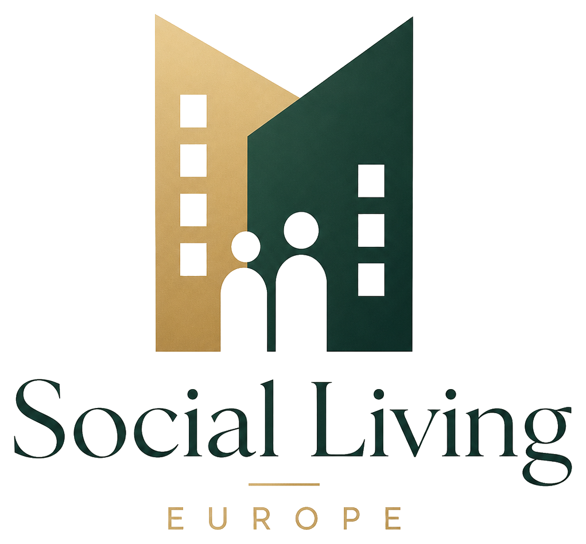
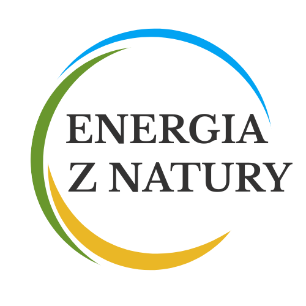

Gdy rynek nie dociera
Usługa jest nieopłacalna, rozproszona lub zbyt ryzykowna dla prywatnego operatora — więc rynek się wycofuje.
Tworzymy programy i mechanizmy współpracy dla społeczności lokalnych. Łączymy sektor publiczny, rynek i organizacje społeczne w rozwiązaniach, które działają w praktyce.
W wielu miejscach potrzeby mieszkańców nie są zaspokajane ani przez rynek, ani przez usługi publiczne. Te luki nazywamy białymi plamami — i właśnie tam działamy.
Usługa jest nieopłacalna, rozproszona lub zbyt ryzykowna dla prywatnego operatora — więc rynek się wycofuje.
Brakuje kadr, stabilnego finansowania albo modelu współpracy z lokalnymi wykonawcami, by utrzymać usługę.
Łączymy zasoby, partnerów i role tak, by usługa mogła działać lokalnie i skalować się etapami.
Białe plamy to miejsca, gdzie ani rynek, ani sektor publiczny nie zapewnia wystarczającego dostępu do usług i infrastruktury potrzebnych do normalnego życia.
Nie zastępujemy rynku ani państwa — domykamy luki, w których oba systemy zawodzą.Rynek i sektor publiczny nie domykają lokalnych potrzeb. Ekonomia współdzielenia projektuje pomost — a Fundacja Divideyou buduje programy i mechanizmy współpracy, które dają korzyści wszystkim uczestnikom: samorządom (JST), lokalnej społeczności i współpracującym firmom.
Oferuje produkty i kapitał, ale nie domyka dostępności i potrzeb społecznych.
Mechanizmy i programy, które łączą zasoby, role i finansowanie w jeden model.
Odpowiadają za potrzeby mieszkańców, ale brakuje im zasobów i elastyczności.
Kilka liczb pokazujących, dlaczego potrzebne są rozwiązania pomostowe — w opiece, mieszkalnictwie, energetyce i żywności.
Dane szacunkowe, według przywołanych źródeł (GUS, Eurostat, Ember, UN/FAO, PwC).
W każdym obszarze działamy według tej samej logiki: problem → pomost współdzielenia → konkretne rozwiązanie. Mieszkalnictwo społeczne, mikrosieci energetyczne, opieka senioralna i bezpieczeństwo żywnościowe.
Coraz więcej osób starszych potrzebuje opieki i wsparcia, a usług publicznych jest za mało — oferta prywatna bywa poza zasięgiem. Powstaje luka, której samodzielnie nie domyka ani gmina, ani rynek.
Dostępnych mieszkań brakuje, a ceny rynkowe odcinają wielu mieszkańców. Programy publiczne nie nadążają za potrzebami — między rynkiem a polityką mieszkaniową rośnie luka dostępności.
Rosnące koszty energii obciążają gminy i mieszkańców, a rynkowi dostawcy nie dają lokalnej niezależności. Brakuje rozwiązań pośrednich między rynkiem energii a potrzebami społeczności.
Lokalna produkcja słabnie, a długie łańcuchy dostaw osłabiają bezpieczeństwo żywnościowe. Ani rynek, ani usługi publiczne samodzielnie nie domykają dostępu do dobrej, lokalnej żywności.
Fundacja Divideyou projektuje mechanizmy pomostowe; wdrożenia realizujemy w ekosystemie konsorcjów i partnerów specjalistycznych.
Instytucja wdrożeniowa w obszarze senioralnym. Łączy samorządy, operatorów usług i lokalne organizacje, by wspólnie organizować opiekę, bezpieczeństwo i wsparcie osób starszych tam, gdzie brakuje ich na rynku i w usługach publicznych.

Instytucja wdrożeniowa w obszarze mieszkalnictwa. Buduje dostępne mieszkalnictwo społeczne i pracownicze, łącząc gminy, inwestorów i mieszkańców w modelach, które otwierają drogę do własnego lokum poza zasięgiem czystego rynku.

Instytucja wdrożeniowa w obszarze energetyki. Tworzy lokalne społeczności energetyczne i mikrosieci, dzięki którym gminy i mieszkańcy wspólnie produkują oraz magazynują energię i zyskują większą niezależność od rynku.
Zestaw programów i narzędzi do wdrożenia w organizacji lub lokalnie — jako rozwiązania pośrednie między rynkiem a usługami publicznymi.
Programy uruchamiamy z konkretnymi partnerami. Każda grupa wnosi inną rolę i zasoby — a ekonomia współdzielenia łączy je tam, gdzie rynek i sektor publiczny nie domykają potrzeb.
Pomagamy JST domykać „białe plamy” w usługach i infrastrukturze — w polityce senioralnej, mieszkaniowej i energetycznej. Ekonomia współdzielenia pozwala uruchamiać programy, gdy rynek i sektor publiczny nie domykają potrzeb mieszkańców.
Zapraszamy firmy wykonawcze do realizacji projektów uruchamianych wspólnie z JST — od mieszkań po centra usług i modernizacje. Współdzielenie ról i ryzyk porządkuje proces i przyspiesza wdrożenia tam, gdzie standardowe modele inwestycyjne się blokują.
Wspieramy lokalnych pracodawców w tworzeniu polityki mieszkaniowej dla pracowników oraz współpracy energetycznej z gminą. To praktyczne programy „pomiędzy” rynkiem i publicznym — stabilizujące kadry i obniżające bariery rozwoju lokalnej gospodarki.
Pomagamy NGO wejść w realną współpracę z JST: od diagnozy potrzeb, przez modele usług, po wdrożenia lokalne. Ekonomia współdzielenia tworzy pomost między potencjałem społecznym NGO a możliwościami organizacyjnymi i finansowymi samorządu.
Współpracujemy z dużymi firmami przy programach społecznych, które realnie poprawiają jakość życia pracowników i lokalnych społeczności. Zamiast deklaracji — wdrożenia: mieszkania, wellbeing, usługi i narzędzia, które można skalować i powielać w kolejnych lokalizacjach.
Łączymy finansowanie z realnym efektem społecznym: mieszkalnictwo w modelach pomostowych (np. Rent-to-Buy), restrukturyzacje trudnych projektów oraz inwestycje w obszar senioralny. Ekonomia współdzielenia porządkuje role i umożliwia realizację tam, gdzie tradycyjne modele zawodzą.
Fundacja Divideyou organizuje montaż finansowy dla swoich projektów: łączy dotacje, pożyczki preferencyjne, fundusze unijne i kapitał inwestycyjny w jedną, spójną strukturę. Partner nie musi szukać źródeł samodzielnie — robimy to wspólnie, dobierając finansowanie do konkretnego wdrożenia.
Środki krajowe i programy grantowe na usługi społeczne, mieszkalnictwo, energetykę i cyfryzację.
bezzwrotne · uruchamiają programNiskooprocentowane finansowanie zwrotne na inwestycje społeczne i mieszkaniowe.
zwrotne · niski koszt kapitałuProgramy europejskie i regionalne — pomost między celem społecznym a środkami strukturalnymi.
UE / regionalne · skalaKapitał prywatny i inwestorski powiązany z mierzalnym efektem społecznym (impakt).
kapitał · efekt społecznyJST, NGO, firma lub inwestor wnosi potrzebę i zasoby.
Dobieramy i łączymy źródła; przygotowujemy strukturę pod dofinansowanie.
Dotacje + pożyczki + UE + kapitał — w jednym, spójnym budżecie projektu.
Nie zostawiamy partnerów z finansowaniem samych. Fundacja pełni rolę organizatora projektu partnerskiego: składa montaż finansowy, dobiera instrumenty i wspiera w przygotowaniu wniosków oraz rozliczeń — tak, by cel społeczny był wykonalny finansowo.
Opisz problem i kontekst (JST / NGO / firma / finansowanie). Odpowiemy z propozycją ścieżki: obszar → projekt → partnerstwa.